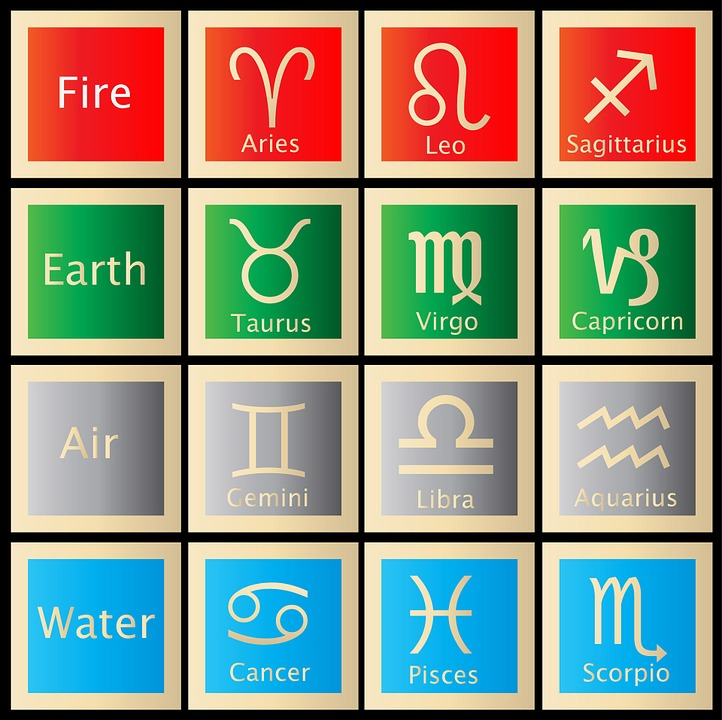

Why make this website
Your zodiac sign can mean many things about who you are as a person and why. Maybe you'er just curious about what your zodiac means. I want people to be able to understand themselves and why they are them. When I found out what my zodiac meant I got interested in what the rest of them meant as well.
Creater and how information was collected
Alaynna Sagle is a sophmore in high school and has gone to the same school her whole life. She had grown a liking towards zodiacs and their meanings over the past year. She came across this information by interviewing mutiple people and gaining as much knowledge about the subject as she could.
